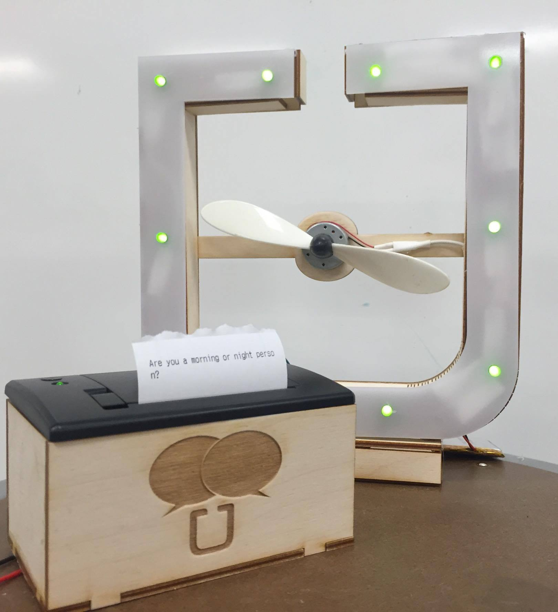
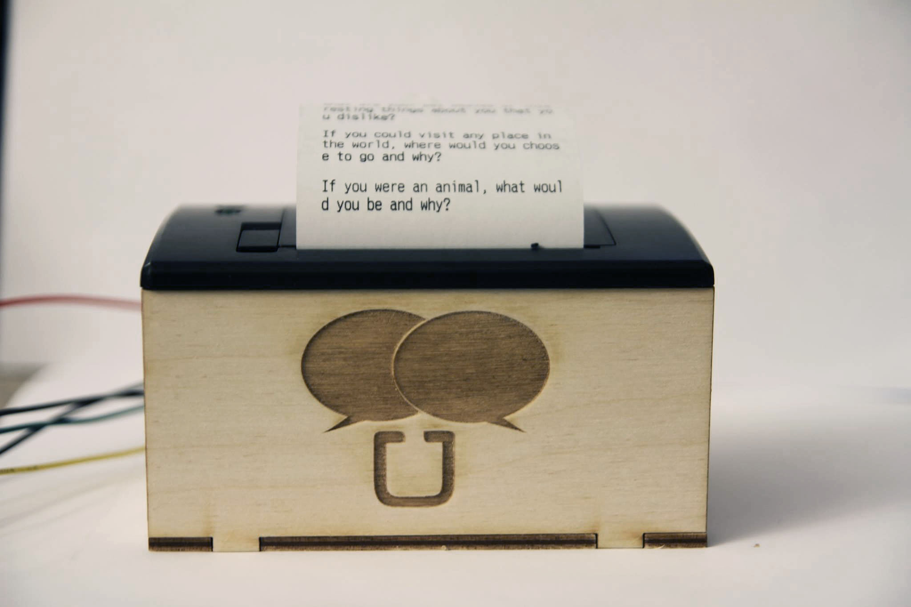
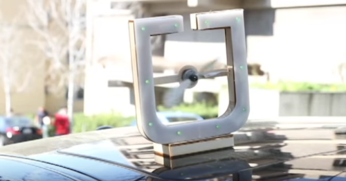

Talkbox is a movement-powered device for Uber drivers and passengers. When the vehicle moves, a propeller on top of the car spins and signals a bluetooth-enabled printer inside the car to generate an ice-breaker question. This project was intended to foster fun communication between drivers and passengers and to enhance the rideshare experience for both parties. My roles included sketching, wire-framing, and prototyping of the exterior casing, user testing various functionality solutions, and construction of the physical product.
Talkbox was a project from Computer Science 298 – Critical Making: Materials, Protocols, and Culture at UC Berkeley. In this class, we explored various design techniques and implications of the maker movement, as well as design, prototyping, and testing strategies.


